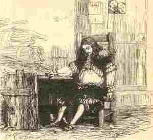

1.
Floc'hig
ar roue a zo paket,
Abalamour d'un taol n'eus graet.
Rekedak ta la ,
La ri la ri la ri la
.

2 Abalamour d'un taol hardiz
Ema er vac'h
kriz
e Pariz.
3. Eno na wel na noz na deiz
Ur
dornad
plouz evit gwele.
4. Ha bara
segal
evit boued,
Ha dour
puñs
evit e sec'hed.
5. Eno na zeu den d'hen welet,
'Met al logod hag ar razhed,
6. Al logod hag ar razhed du,
D'eus ar re-se en-deus didu.
II
7. Eñ lâre, dre doull an alc'hwez,
Da Benfeunteunioù, er c'houlz-se:
8. -
Yannig
, te va brassañ mignon,
Selaou un tammig ac'hanon :
9. Kae d'ar maner betek ma c'hoar,
Ha lavar de'i emaon war varr,
10. War wir varr da goll ma buhez,
Dre gemenn an aotrou roue :
11. Ma zeufe ma c'hoar betennon
Konfort a refe d'am c'halon.-
12. Penfeunteunioù dalc'h m'a glevas,
Etrezek Kemper e redas
13. Kant lev ha tregont zo, war dro,
Etre Pariz ha
Bodinio
14. C'hoazh 'n-deus o graet, ar paotr Kernev,
E div noz hanter
hag un deiz.
15. Pa eas tre er zal Bodinio,
Oa gouloù enni
tro-war-dro
;
16. An itron a oa o koaniañ
Gant tudjentil vras eus ar vro.
17. Hag en he dorn un hanaf mard
Leun a win-ruz a wellañ barr.
18.- Floc'hig koant demeus a Gernev,
Peseurt keloù zo ganout-te,
19. Pa 'z out ker glas hag an askol,
Ken diflak hag un yourc'h war goll ?
20. - Ar c'heloù zo ganin, itron,
Lakay strafuilh en ho kalon,
21. Ho lakay da huanadañ
Hag ho taoulagad da ouelañ
22. Ho preurig paour a zo war varr,
Mar zo bet biskoazh war zouar ,
23. War wir varr da goll e vuhez,
Dre gemenn an Aotrou roue.
24. Ma yefec'h betennañ, itron,
C'hwi refe konfort d'e galon.-
25. Kement e oa bet strafuilhet
An itron
gaezh
, oc'h e glevet,
26. Kement e oa bet strafuilhet,
Ken e laoskas an hanafad
27. Hag e strewas gwin war an daol.
'Trou-Doue ! Homañ zo arouez
fall
!
28.
- Buan
, paotr
ed
ar marchosi!
Buan!
Daouzek marc'h ha deomp de'i !
29. Pa grefen unan e pep poz,
Me yelo da Bariz fenoz ;
30. Pa grefen unan e pep eur,
Fenoz ez in betek va breur.-
III
31. Floc'hig ar roue a lavare,
War ar c'hentañ
de(r)ez
pa bigne
32.- Ne ran forzh da be-goulz mervel,
Pan't divroet, pan't diskoazell
33. Pan't divroet, pan't diskoazell,
Pan't ur c'hoar 'm eus e Breizh-Izel.
34. Hi vo bep noz o c'hervel breur,
O c'hervel breurig e pep eur.-
35. Floc'hig ar roue a lavare,
War an eilvet derez pa bigne :
36.- Me garfe, kent hag ar marv,
Klevet keloù dimeus va bro
37.
Klevet
keloù dimeus va c'hoar,
Va c'hoarig kaezh; daoust hag hi oar ?
38. Floc'hig ar roue a lavare,
War lein
ig ar groug
pa bigne
39.- Me glev ar ruioù o krenañ,
Gant heul va c'hoar o tont amañ!
40. Va c'hoar zo erru d'am welet,
En anv Doue ! Gortozit!-
41. Ar
penn-archer
'n-deus respontet
D'ar floc'hig, pa 'n-deus hen klevet :
42.- Kent ha ma vezo
erruet,
C'hwi a vezo bet dibennet.-
43.
Itron Bodinio
a-neuze
Gant
re Bariz
a c'houlenne
44. - Petra foul zo 'touez ar wazed ;
Kement me zo 'touez ar merc'hed ?
45. - Loeiz
Trizek
, Loeiz an traitour
A
laka
dibenn ur floc'h paour.-
46. Oa ket ar ger peurlavaret
Evel m'he-deus he breur gwelet ;
47. Gwelet he breur kaezh daoulinet,
E benn war ar c'hef-lazh soublet
48. Hag hi a douch, en ur hopal:
- Va breur! Va breur ! Laoskit-hen 'ta!
49. Laoskit-hen ganin, arserien,
Me roy deoc'h
kant skoed
aour melen
50. Me roy deoc'h, evit un diner,
Daou-c'hant mark arc'hant Landreger.-
51. Gant ar groug dalc'h ma tigoue'as,
Penn he breur troc'het
a gouezhas,
52. Hag a strinkas gwad war he
lenn
Hag hen ruzias a-benn-da-benn.
IV
53. - Yec'hed deoc'h, roue ha rouanez,
Pa
m'oc'h
ho-taou en ho palez.
54. Peseurt torfed en-deus eñ graet,
P'ema bet
ganeoc'h
dibennet?
55. -
C'hoari
kleze
hep grad
ar roue ;
Lazhañ kaerañ floc'h en-devoe.
56. - Ar c'hleze na zic'houiner ket
'
Mechañs, hep kaout
abeg
ebet.
57 .- Abeg en-deus bet, a-dra-sklaer,
Evel m'en-deveus ul lazher.
58. - Lazherien, Aotrou, n'ez omp ket,
Na denjentil Breizh kennebeut
59. Na denjentil
gwirion ebet
Ar C'hallaoued, ne lâran ket;
60. Rak me oar a-walc'h mab ar bleiz,
Gwell ganeoc'h kaout gwad eget reiñ.
61. - Sarrit ho peg, va itron ger,
Mar 'peus c'hoant da zistreiñ d'ar ger.
62.- Ne ran forzh chom pe mont en-dro,
O vezañ ma breur kaezh marv,
63. Be'añ drouk gant nep a garo,
E abeg fell din! M'hen ouio!
64.- Mar goût e
abeg
a fell deoc'h,
Selaouit,
rak
me lâro deoc'h:
65. Mont a reas da vuanekaat,
Ha klask trouz d'am floc'h en-deus graet,
66. Ha kleze oc'h kleze timat,
O klevet al lavar anat,
67. Al lavar
kozh
, ar wirionez
«N'eus tud e Breizh, nemet moc'h-gouez »
68. - Mar d'eo honnezh ur wirionez,
Ur wirionez-all ouzon-me
69. «Evit
añ
da vout roue Bro-C'hall,
Ne d'eo Loeiz 'met ur
goaper
fall.»
70.
Hogen
prestik e weli-te,
Ma
gwell pe wazh
e goapez-te.
71. Pa 'm-bo diskoue'et, 'benn ur
gaouad,
D'am broiz va
lenn
leun a wad,
72. A-benn neuze e ouezi
reizh
Ma
bez, e gwir, moc'h-gouez
, e Breizh! -
V
73. Un div pe deir zun goude-se,
Ur c'hannadour a zegoueze,
74. 'Zegoueze deus bro Normaned,
Gantañ lizherioù siellet,
75. Lizerioù siellet e ruz
Da reiñ d'ar roue
fri-bras
diouzhtu ;
76. Ar roue pa en-deus o lennet
Sellet ken du e-deveus graet,
77. Sellet ken du evel ur
c'hazh
'Vel ur
c'hazh-gouez
tizhet el las.
78.-
Mallozh ruz!
M'am-bije gouiet,
Ar
Wiz
na vije ket
kuitet!
79. Ouzhpenn
dek
mil skoed a gollan,
Ha
dek
mil den
war-benn
unan! -
Note: Les changements de mots et les ajouts significatifs par rapport aux versions du carnet N°2 (cf. ci-dessous) sont en
caractères gras
.
Note: Word changes and significant additions compared to the versions of notebook N ° 2 (see below) are in
bold characters
.
Variantes tirées du premier carnet de collecte de La Villemarqué
61. - Tenez votre langue, ma chère dame,
Si vous tenez à rentrer chez vous!
- Je ne tiendrai ma langue .
Que si cela me plait .
63. Et quand j'aurai entendu vos (véritables) raisons;
Quand j'aurai su la vérité.
En marge à gauche verticalement
Le duc de Bretagne François II accusait Louis XI de lui débaucher et d'attirer à la cour ses sujets. (Barante)
p.. 198
vos raisons
64. - Si vous voulez savoir la vérité,
Ecoutez, je m'en vais vous la dire :
- Celui qui tue pour un oui ou pour un non,
Ne mérite-t-il pas qu'à son tour on le tue?
- N'est-ce pas une honte pour tout un chacun
De ne point avoir de caractère?
- Que celui qui a la langue trop bien pendue
N'aille pas se plaindre!
- Celui qui dit la vérité,
N'a jamais la langue trop bien pendue. .
Et je tiens absolument à savoir
Quelle genre de vérité fut dite:
67. - Celle qui dit que les Bretons sont des porcs,
Que les Bretons sont des porcs,
Des porcs sauvages, sauf votre respect, Madame.
69 - Tout roi de France
Et toute reine que vous êtes,
Tu n'es jamais, toi, qu'un méchant homme (un méchant railleur)
Et toi qu'une traitresse (une vilaine femme)
70. Dans très peu de temps, tu verras
Si c'est un mensonge ou la vérité
Que j'ai dits en guise plaisanterie.
71. (Quand je montrerai) dans peu de temps
(Mon voile blanc à mes compatriotes)
Ainsi que la chemise ensanglantée de mon frère.
p.. 199 / 113
72. (C'est alors qu'on verra ce que vaut)
Oui tu verras clairement ce que vaut
Le réseau d'amis que mon frère a en Bretagne.
=
***********************
73. Une ou deux semaines plus tard
Ur messager se présentait.
74. (1) Venant de Normandie:
(2) Et Porteur de plis scellés.
75. Des lettres portant des sceaux rouges
A remettre au roi immédiatement.
76. Le roi en prit connaissance
Et son visage s'assombrit.
77. Il prit un air aussi abattu
Qu'un marcassin pris dans un collet.
78. - Fi-Dieu! Si j'avais su,
Je n'aurais pas laissé s'envoler l'oiseau
79. Outre douze mille écus que je perds,
Voilà un homme qui m'en coûte cent mille autres!-
=
61. - Hold your tongue, my dear lady,
If you want to be free to go home!
- I won't hold my tongue.
If I don't choose to
63. And only once I have heard your (real) reasons;
Only when I know the truth.
Left margin vertically
The Duke of Brittany François II accused Louis XI of attracting his subjects to the French court. (Barante)
p .. 198
your reasons
64. - If you want to know the truth,
Listen, I'm going to tell you:
- If you kill whoever says a word that doesn't please you,
Don't you deserve to be killed in your turn?
- But isn't it a shame for anyone
Not to react to an insult?
- Whoever keeps his mouth and his tongue
Keeps himself out of trouble!
- Whoever speaks the truth,
Has no reason to keep his mouth and his tongue .
And I absolutely want to know
What kind of truth was told:
67. - A saying to the effect that Bretons are pigs,
That Bretons are pigs,
Wild pigs, with all due respect, Madame.
69 - Though you are the king of France
And you the queen,
You are but a bad man (and a bad mocker)
And you a traitor (and a naughty woman)
70. In a very short time you shall see
If it's a lie or the truth
What I tell you in response to your joke.
71. (For I am going to show) very soon
(My white veil to my fellow countrymen)
As well as my brother-in-law's blood-stainted shirt.
p .199 / 113
72. (Then you'll see what it means)
Yes, you will see clearly what itmeans
In Brittany to have reliable friends.
=
***********************
73. One or two weeks later
A messenger turned up.
74. (1) Coming from Normandy:
(2) And he was the bearer of sealed letters.
75. Letters with red seals
To be handed over to the king immediately.
76. The king read them
And his face darkened.
77. He took on such a downcast air
Like a wild boar caught in a snare.
78. - By Jove! If I had known,
I wouldn't have let the bird fly away
79. Beside twelve thousand crowns that I lose,
Here is a man who costs me a hundred thousand soldiers! -
=
p.196
Bodelio
[BOD]
2 (+) Kerkent evel m’he-deus klevet
Diwar he marc'h ema (lammet).
D'eus he (c’harroñs ema) diskennet.
Gant ar chafot ema lammet;
- Ma breurig paour ganin laoskit
Ma breurig paour na lazhit ket!
49. Laoskit hen ganin, archerien,
Me roy deoc’h pouez an aour melen,
50. Me roy deoc'h, koulz un diner,
Pouez daou-c'hant mark eus a Landreger, -
Oa ket he c’homz peurlavaret,
51.2 Ha pa oa penn he breur troc’het,
6 vers entre accolades
Hag en ur ganastell oa lakaet
Da reiñ d'ar bagad da sellet ;
Ha pa oa troc'het, penn he breur
Ken a strinkaz gwad war al leur,
52. Ken a strinkas war he c’herc’hen,
A oa, ruziet he hiviz wenn.
_____________
(1) 43. Ar markizez a choulenne
Gant ar barisianiz neuze :
44. - Petra nevez zo erruet
Foul a zo ' touez ar wazed
Kement ma zo 'touez ar merc’hed?
45. - Loeiz Unnek, Loeiz an treitour
Ma o tibenn ('n-deus dibennet) ur pajig paour;
3 vers entre accolades
Bremaik a vo...
Loeiz Unnek en-deuz dibennet
Jentillañ paotrig livrin gwelet) - (X)
En marge à droite verticalement
52. Skuilhet e gwad war he gouel wenn
Ken a oa ruziet penn-da-benn
An itron Bodelio, pa welas
Trezek 'n Aotrou roue a zeuas.
Penn he breur paour a oa troc'het,
Hag e wad warnezhi skuilhet
(Skuilhet he wad war he (ouel) begwennig wenn
Skuilhet war he jobelin wenn,)
p.. 197 / 112
53. (3) - Yec'hed vat deoc'h, roue ha rouanez
Deut on d ho ka(v)out en ho palez.
54. Peseurt torfet en-deus eñ graet
Ha pa 'mañ ma breur dibennet?
55. - Tennet e gleve dirak ar roue,
Lazhet kaerrañ paj en-devoe.
56. - Na zic'houiner ket e gleze
Pa na oa mechañs digarez
57. - Digarez 'n-deus bet a-dra-sklaer,
Evel m’en-devez al lazher!
58. - Lazherien biskoazh n'emaomp bet
Kenneubet na denjentil Breizh.
59. Na denjentil e Breizh-Goueled,
Ar C'hallaoued ne laran ket... -
2 (+) Dès qu'elle l'eut entendu
Elle a bondi vers ses chevaux.
De son (carrosse) elle est descendue.
Et s'est précipitée vers l'échafaud.
- Mon pauvre frère, remettez-le moi!
Mon pauvre frère, ne le tuez pas!
49. Laissez-le moi, gendarmes,
Je vous donnerai son poids en or jaune,
50. Je vous donnerai, pour chaque denier,
Le poids de 200 marcs [d'argent de] Tréguier. -
51.- Elle n'avait pas achevé de parler
Que la tête était tranchée,
6 vers entre accolades
Et placée dans un panier
Pour l'exposer à la populace.
Qu'était tranchée la tête de son frère
Et que le sang ruisselait sur le sol,
52. Il gicla sur sa gorge,
Et son corsage blanc en fut taché de rouge.
*************************
(1) 43. La marquise demandait
Au Parisiens à ce moment-là:
44. Que se passe-t-il donc ici?
Pourquoi cette foule où les hommes
Se mélangent aux femmes?
45. - Louis Onze, Louis le traître
Fait décapiter (vient de décapiter) un pauvre page;
3 vers entre accolades
Dans un instant ce sera fait...
Louis Onze aura décapitét
Le plus sémillant page rouge qu'on ait vu (X)
En marge à droite verticalement
52. Le sang avait coulé sur son voile
Qui était entièrement maculé de rouge.
La dame de Bodinio quand elle s'en aperçut
Se rendit auprès du roi.
La tête de sonfrère était tranchée
Et son sang tachait ses vêtements.
(Son sang avait giclé sur (son voile) petit béguin blanc
Giclé sur son capuchon blanc,)
p.. 197 / 112
53. (3) - Bonne santé à vous, roi et reine
Je suis venu vous vouir en votre palais.
54. Quel sorte de crime mon frère a-t-il commis
Pour qu'on lui tranche la tête?
55. - Il s'est battu en duel devant le roi,
Et il a tué le plus beau de ses pages.
56. - On ne dégaine pas son épée
Sans avoir, je suppose, de motif...
57. - Un prétexte il en avait, bien entendu,
Comme un assassin en a toujours.
58. - Jamais nous n'avons été des assassins
Pas plus qu'aucun gentilhomme de Bretagne.
.
59. Qu'aucun gentilhomme de Basse Bretagne du moins,
De Bretagne Gallaise je ne dis pas...
p. 196
Bodelio
2 (+) As soon as she heard it
She leaped towards her horses.
From her (carriage) she got out.
And rushed to the scaffold.
- My poor brother-in-law, give him over to me!
My poor brother-in-law, don't kill him!
49. Leave him over to me, constables,
I will give you his weight in yellow gold,
50. I will give you, for every penny you demand
The weight of 200 silver marks [of] Tréguier. -
51.- She had not finished speaking
When his head was cut off,
6 lines in braces
And placed in a basket
For the populace to look at
Her brother-in-law's head was cut off
And his blood was streaming on the ground,
52. It squirted on her throat,
And her white bodice was stained with red.
*************************
(1) 43. The Marchioness was asking
The Parisians at that time:
44. What is going on here?
Why this crowd where men
Mix with women?
45. - Louis the Eleventh, Louis the traitor
Has ordered that a poor page be behaeded;
3 lines in braces
In a moment it will be done ...
Louis the Eleventh will have beheaded
The handsomest red page we've ever seen (X)
Right margin vertically
52. Blood had flowed on her veil
That was all smeared with red.
The lady of Bodinio when she noticed it
Went to the king.
Her brother's head was cut off
And his blood stained his clothes.
(Her blood had spurted on (her veil) little white cap
Squirted on her white hood,)
p .. 197/112
53. (3) - Good health to you, King and Queen
I have come to see you in your palace.
54. What sort of crime was committed by my brother-in-law
So that his head must be cut off?
55. - He fought a duel without the king's approval,
And he killed the fairest of his pages.
56. - One does not not draw his sword
Without having, I suppose, any motive ...
57. - A pretext he did have, of course,
Like an assassin always has.
58. - Nobody in our family ever was an assassins
Nor was any gentleman in Brittany.
.
59. No gentleman in Lower Brittany at least,
In Upper Brittany I do not know ...
61. - Sarret ho peg ma Itron ger
Mar 'peus c'hoant da zistreiñ d’ar ger!
- Sarro ma beg me na rin mui.
Nemet pa bljo ganin-me .
63. P'am-bo klevet ar (wirionez) ho tigarez
Ken 'm-bo gouezet ar wirionez.
En marge à gauche verticalement
Le duc de Bretagne François II accusait Louis XI de lui débaucher & d'attirer à la cour ses sujets. (Barante)
p. 198
ho tigarez
64. Mar goût ar wiirionez fell deoc’h,
Silaouit ha me laro deoc’h :
- Neb a lazh 'vit daou pe dri ger,
Ha na lazh ket 'ne(zh)an en aner?
- Pec’hed a vez evit unan
A ra, mar 'z eus kalon ennañ?
- Neb en-devez bet teod re lemm,
N'eo ket ret de(zh)an mont da n’em glemm.
- Neb a lavar ar wirionez,
N'eo ket e zeod lemmet re. .
- Ha gallout a ran me [incert.] gouiet,
Pezh ar wirionez da laret :
67. - Laret Bretoned zo pemoc’h,
Ar Vretoned a zo pemoc'h,
Pemoc'h gouez, Itron, respet d'eoc’h
69 - Evidout da vout roue Bro-C’hall -
Evidout da vout rouanez
Te 'n out-te nemet un den-pezh fall (goaper fall)
- Te n'out-te nemet ur traitourez (gwall bezh)
70. Prestik-souden a welfez-te
Mar 'ma gwir pe gaou, ar ger-se
A lares-te, a goapes-te.
71. (Pa ziskoue(z)in gwad) Pa vo diskouet benn ur pennad,
(D'am broiz-me ma gouell wenn)
D'ar vro he rochet leun a wad.
p.. 199 / 113
72. (Penn-a-neuze welfez mar dalv)
Benn a neuze a welfez aes
Mar n'eus ma breur kerent e Breizh.
=
M
73. Un div pe deir zun goude-se
Ur c’hanadour a zigoueze,
74. (1) Dimeus a vro an Normaned :
(2) Gantañ lizherioù siellet,
75. Lizherioù siellet en ruz
Da reiñ d’ar roue Loeiz diouzhtu.
76. Ar roue pa 'n-deus o lennet,
Sellet ken du en-devez graet,
77. Sellet ken du eñ a reas
'Vel d'un targos tapet el las
78. - Feiz-Doué ! M'a- bije gouiet,
Na vije al lapous tec'het.
79. Ouzhpenn daouzek mil skoed a gollan ;
Ha kant mil den evit unan. -
=
26. Elle fut tellement troublée
Que son hanap lui tomba des mains
27. Et se répandit sur (le sol) la table...
Seigneur Dieu, n'était-ce point là un sinistre présage?.
.
p.. 202
28. Elle alla réveiller le valet d'écurie
- Attelez mes douze chevaux et partons d'ici!
29. Dusé-je en crever un toutes les (heures?] à chaque relais,
J'arriverai à Paris ce soir même;
30. Dussé-je crever un cheval toutes les heures,
Ce soir j'aurai rejoint mon frère.
***********************
31. Le page de Bodinio disait
En gravissant la 1ère marche de l'échafaud::
32.1 - Ce n'est pas l'heure de ma mort qui m'importe
33.2 C'est que ma soeur de Bretagne ;
34. Réclamera son frère chaque nuit;
Réclamera son frère chaque heure. -
35. Le page de Bodinio disait
En gravissant la seconde marche:
:
36. - Je voudrais, avant de mourir,
Avoir des nouvelles de mon pays :
37. Des nouvelles de Bodinio et de ma soeur:
Est-ce qu'elle sait quel est mon sort? -
38. Le page de Bodinio disait
En posant le pied sur la plateforme...
p.. 216 -
La comtesse de Bodelio
Autre cahier 36 & 121 =
Une chanson nouvelle a été composée
Au sujet de la comtesse de Bodelio ;
38. Le page de Bodinio disait
Engravissant le plus haute marche de l'échafaud:
39.- J'entends résonner les pavés de Paris:
C'est ma soeur qui arrive!
40. Ma soeur est arrivée pour me voir
Pour l'amour du Cirl, attendez-la!! -
41. Les gendarmes en l'entendant ainsi parler
Ont répondu au page :
42. Avant que votre soeur ne soit descendue de sa voiture,]
[Avant qu'elle ne soit arrivée]
Vous aurez été décapité.
42. Oui vous aurez péri bien avant:
Nous vous aurons décapité -
*********************
La marquise disait
A la reine ce jour-là::
53. - Bonjour à vous, roi et reine,
Le frère que je connais était plus docile à gouverner
- C'est une sale caboche et un traître
Il a trucidé un pauvre page.
Il a tué le plus beau page que j'aie vu,
- Vous l'appelez une sale caboche!
54. Quel genre de forfait a-t-il commis?
p.. 217 / 130
-
55. - Il a tiré l'épée devant le roi,
Pour tuer le plus beau page qu'il avait.
- Mon père, mon frère sont accusés de lèse-majesté
Et nous rentrerons chez nous ce jour-même..
26. She was so confused
That her hanap fell from her hands
27. And the wine spread over (the floor) the table ...
My God, was this not a sinister omen?.
.
p .. 202
28. She went and waked up the stable lad
- Harness my twelve horses and let's get out of here!
29. Do I have to kill one horse every (hour) at each shift,
I will arrive in Paris this very evening;
30. Should I kill a horse every hour,
Tonight I will have joined my brother.
***********************
31. The page of Bodinio said
On climbing the first step of the scaffold:
32.1 - I don't worry about the hour of my death
33.2 But about my sister in Brittany;
34. She willl claim her brother every night;
Will claim her brother every hour. -
35. The page of Bodinio said
On climbing the second step:
:
36. - I would like, before I die,
To have news from my country:
37. News from Bodinio and my sister:
Does she know how I fare? -
38. The page of Bodinio said
On setting his foot on the platform ...
p. 216 -
The Countess of Bodelio
See first notebook, pages 36 & 121
This is a new song composed
About the Countess of Bodelio;
38. The page of Bodinio said
On climbing the highest step of the scaffold:
39.- I hear the cobblestones of Paris echoing:
I know my sister is coming!
40. My sister has come to see me
For Heaven's sake, wait for her! -
41. The constables on hearing him spoke thus
In response to his words:
42. Before your sister get out of her carriage]
[Before she arrives]
You will have been beheaded.
42. You will have perished long beforehand.
We will have beheaded you -
*********************
The marchioness said
To the queen, that day ::
53. - Hello to you, king and queen,
The brother I know was more easy to rule
- He's a stubborn villain and a traitor
He killed a poor page.
He killed the handsomest page I had,
- You call him a stubborn villain!
54. What kind of crime did he commit?
p .. 217/130
-
55. - He drew the sword before the king,
And killed the most handsome page he had.
- My father and my brother are accused of lese-majesty
Now we shall return home that very day...
p. 200
Pajik Bodinio zo mac'het
[PBM]
1. Pajik Bodinio zo mac’het, (zo paket)
En abeg d'un taol en-deus graet,
2. Abalamour (en abeg) d’un taolig hardis
Ema eñ e vac'h e Pariz
3. E-lech na wel na noz na deiz.
Un torchenn plouz evit gwele.
4. Un torzh a vara heiz da bred.
(Ur podad) Dour poull da derriñ e sec'hed.
5. E lec'h na teu den d'hen gwelet
'Met al logod hag ar ra(zh)ed.
6. Er c'houlz-se al logod hag ar ra(zh)ed du.
Dimeus ar re-se en-deus didu .
7. Pajik Bodinio a lavare
Eñ lare dre doull an alc'hwez
Da Benfentenio en deiz-se:
8.- Iwenig, ma brassañ mignon,
(Iwenik) selaou ac'hanon.
'Peus truez, me spi, ac'hanon
En añv Doue, selaou ac'hanon!
9. Kae d’ar ger (maner), davet ma c'hoar,
Ha lavar dezhi emaon-me war varr.
10. War varr da gollet ma vuhez
(Defot na beder ar roue)
Dre gourc'hemenoù ar roue
Dre gemenn an aotrou roue. -
12. Ne ao ket peurechuet e c’her,
Pa oa Iwenik war hent bras Kemper.
13. (Kant lev ha tregont zo war-dro
Etre Pariz ha Bodinio.
Kant lev ha zo hag hanter-kant,
'Tre Pariz ha parrez Fouenant,
p. 201 / 114
14. Ha c’hoazh 'n-deus e graet, ar paotr Kerne
En un nozvezh hag en un deiz.
15. Pa eas-tre er zal Bodinio (Pa zegouéet e Bodinio)
Luc'he gant ar c'houlouennoù,
16. M'edo an itron o koaniañ
(Gant tudjentil dimeus ar vro,)
Gant lod a noblañs eus ar vro.
17. Hag en he dorn ur hanaf marzh,
Leun a win ruz a wellañ barr.
18. - Pajig koant dimeus a Gerne,
Peseurt keloù zo ganout-te?
19. Pa 'maout ker glas hag an askol ;
Ken diank hag un heizez goll?
20. - Ar c'heloù zo ganin, Itron,
Lakay trubuilh en ho kalon;
21. Ho lakay da huanadañ
Hag ho taoulagad da ouelañ.
22. Ho preurig paour a zo war varr,
Mar zo bet biskoazh war an douar,
23. War varr da gollet e vuhez
Dre urzoù an aotrou roue
25. Kement e oa bet strafuilhet
An intron pa devez klevet
 Traduction /Translation col. 1
(click on "+")
Traduction /Translation col. 1
(click on "+")